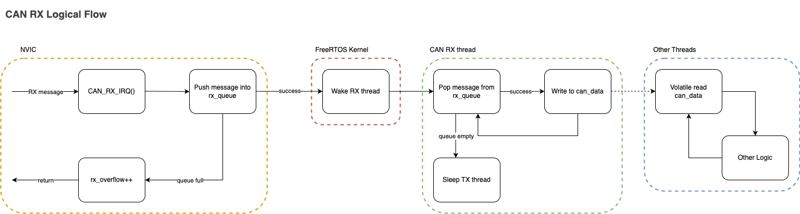
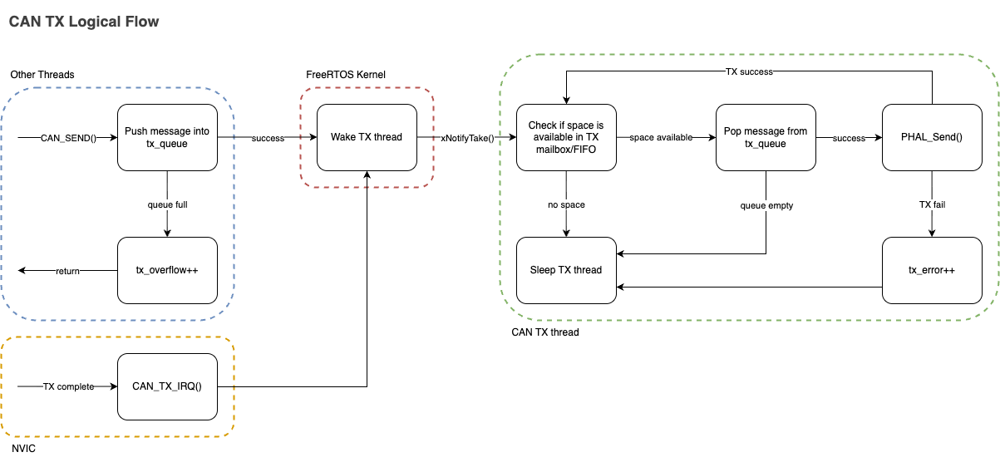
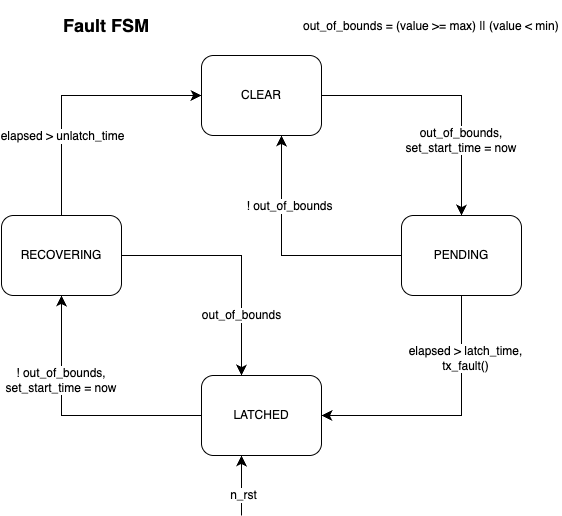

- Generated by
 1.12.0
1.12.0
|
PER Firmware
|
Standardized framework for CAN communication and system-wide fault management within PER vehicles.
canpiler/: Jinja2-based Python module for parsing configurations and generating codeconfigs/: "Source of Truth" definitions for nodes, buses, and system-wide faults.generated/: Auto-generated C files and headers for CAN nodes.dbc/: CAN database (DBC) files for external analysis tools.schema/: JSON schemas for validating configuration files.Core Files:
can_init.c / can_common.h: Bus/peripheral initialization and CAN_init().can_rx.c: CAN RX task and the shared can_data instance.can_tx.c: CAN TX task and per-peripheral software queues.faults_common.c / faults_common.h: System-wide fault management.can_library.cmake: CMake integration and node library generation.The high-level logic flow of an RX is shown here:

The high-level logic flow of a TX is shown here:

can_library/configs/ using the provided JSON schemas.can_node_<NODE_NAME> to LIBS in your board's add_firmware_component(...) call (must match the uppercase node name from CMake).#include "can_library/generated/PDU.h" / #include "can_library/generated/<NODE_NAME>.h") in your main.c.main.c with CAN_init().main.c using DEFINE_CAN_TASKS() and START_CAN_TASKS().The most recent rx'd data is available in the can_data struct, which is updated by the CAN RX task. Sending CAN messages is done via the generated CAN_SEND_<message_name>() functions, which enqueue messages to be sent by the CAN TX task.
The faults_common module implements the FIDR (Fault Isolation, Detection, and Recovery) system. It manages the lifecycle of system-wide faults using a robust Finite State Machine (FSM) to prevent flickering and ensure deterministic fault handling.

update_fault(fault_id_t fault_id, float value): Called by the owner node to feed sensor/status data into the FSM.fault_library_periodic(): Tally active faults and call tx_fault_sync(), which broadcasts the node-specific <node>_fault_sync CAN message.is_latched(fault_id_t fault_id): Check if a specific fault is active.is_clear(fault_id_t fault_id): Check if a specific fault is clear.MY_FAULT_START to MY_FAULT_END). Only the "owner" node can update the state of these faults, ensuring a single source of truth.